Session 6 Bayesian Regression I
- Learn how to fit linear regression model with brms
- Understand how to interpret and report regression posterior results
- Learn how to fit clustered data with brms
- Learn how to conduct model diagnostics, model comparison, and variable selection
What is regression? (McElreath 2018)
using one or more predictor variables to model the distribution of one or more outcome variables
For a continuous outcome, we typically fit a linear regression model.
- Of course the relationship between outcome and predictors can be non-linear, in this case, we would consider fitting polynomial regression models or splines.
For a categorical outcome, we will fit a generalized linear regression. We will cover this topic in future sessions.
For a repeatedly measured outcome, we can fit a linear mixed-effect model (continuous outcome) or a generalized linear mixed-effect model (categorical outcome).
6.1 Normal Models and Linear Regression
Conditional normal model
- Given its mean and variance, an observation has a normal distribution
\[ Y_i \mid \mu_i, \sigma^2_i \sim N( \mu_i, \sigma^2_i) \]
- This is equivalent to the following statements
\[ Y_i = \mu_i + e_i , \ e_i \sim N(0, \sigma^2)\]
We do not assume the collection of \(Y_i, i=1, \ldots, n\) have a normal distribution
Instead we assume the error term is normally distributed - a lesser assumption!
In case of multiple predictors, \(\mu_i\) becomes a weighted average of the \(\beta_j\) values, the regression coefficient with \(x_{ij}\) denoting the predictors. For example, for two covariates we have
\[ E(y_i) = \mu_i = \beta_0 + \beta_1 x_{i1} + \beta_2 x_{i2} \]
- A polynomial regression model of 2 degrees on \(x_{i1}\)
\[ \mu_i = \beta_0 + \beta_1 x_{i1} + \beta_2 x_{i2} + \beta_3 x_{i1}^2 \]
- Assumptions of linear regression models
- Independent observations
- Linear relationship We can check this assumption by examining marginal plots comparing the model predicted relationship between outcome and each continuous predictor and by examining the residual plot.
- Normality of the residuals
- Homoscedasticity Homoscedasticity in a model means that the residual is constant along the values of the dependent variable.
- Multicollinearity Multicollinearity is the phenomenon when a number of the explanatory variables are strongly correlated.
- Correctly specified regression model This means that all relevant predictors for the response variable have been included in the model. This is often difficult to verify, but we can use posterior predictive distribution to check for regression fit.
6.1.1 One-sample and two-sample normal regression
1. One-sample
- If all observations have the same mean and variance, the likelihood is
\[ Y_i \mid \mu, \sigma^2 \sim N(\mu, \sigma^2)\]
- Good candidate priors for \(mu\) and \(\sigma\) are
- \(\mu \sim N(\text{sample mean}, \text{sample sd})\) or Student-T distributions (to handle heavy tails)
- \(\sigma \sim \text{half-t}(mean = 0, sd = \text{sample sd}, df = 3)\)
Modelling height - Textbook example on the Howell data
Suppose we want to fit a one-sample model on height using a dataset of anthropological measurements on a foraging people taken in the 1960s.
- First let’s examine the summary statistics of variable height
dat <- read.table("data/Howell.txt",header=T, sep=";")
dat %>% tbl_summary(
statistic = list(all_continuous() ~ "{mean} ({sd})",
all_categorical() ~ "{n} / {N} ({p}%)"),
digits = all_continuous() ~ 2)| Characteristic | N = 5441 |
|---|---|
| height | 138.26 (27.60) |
| weight | 35.61 (14.72) |
| age | 29.34 (20.75) |
| male | 257 / 544 (47%) |
| 1 Mean (SD); n / N (%) | |
dat %>% pivot_longer(everything()) %>%
mutate(name = factor(name, levels = c("height", "weight", "age", "male"))) %>% ggplot(aes(x = value)) +
geom_histogram(bins = 10,fill="#008BB0",colour="#002A5C") +
facet_wrap(~name, scales = "free", ncol = 1) +
theme_bw()
- We specify our model with the following priors \[ heights_i \sim N (\mu, \sigma)\] \[\mu \sim N(138, 28)\] \[\sigma \sim \text{half-t}(0, 28, df = 3)\]
Figure 6.1: Prior distributions
- we now fit this model in brms
fit0 <- brm(data = dat,
family = gaussian,
height ~ 1,
prior = c(prior(normal(138, 28), class = Intercept),
prior(student_t(3, 0, 28), class = sigma)),
iter = 10000,
warmup = 5000,
chains = 4,
cores = 4, #instructions on MCMC
seed = 123, # random number seed to make results reproducible
silent = 2,
refresh = 0)
# saveRDS(fit0, "data/chap7_onesample_example")- Summarizing posterior results

## Family: gaussian
## Links: mu = identity; sigma = identity
## Formula: height ~ 1
## Data: dat (Number of observations: 544)
## Draws: 4 chains, each with iter = 10000; warmup = 5000; thin = 1;
## total post-warmup draws = 20000
##
## Population-Level Effects:
## Estimate Est.Error l-95% CI u-95% CI Rhat Bulk_ESS Tail_ESS
## Intercept 138.25 1.18 135.94 140.58 1.00 18944 14350
##
## Family Specific Parameters:
## Estimate Est.Error l-95% CI u-95% CI Rhat Bulk_ESS Tail_ESS
## sigma 27.64 0.84 26.06 29.35 1.00 18557 13633
##
## Draws were sampled using sampling(NUTS). For each parameter, Bulk_ESS
## and Tail_ESS are effective sample size measures, and Rhat is the potential
## scale reduction factor on split chains (at convergence, Rhat = 1).- Geweke index and R-hat (Geweke et al. 1991) to check for MCMC convergence
# modelposterior <- as.mcmc(fit0)
# geweke.plot(modelposterior)
modelposterior <- posterior_samples(fit0)
geweke.diag(modelposterior)##
## Fraction in 1st window = 0.1
## Fraction in 2nd window = 0.5
##
## b_Intercept sigma lp__
## 0.4570 0.2874 0.9759- Posterior predictive graphic check for model fit
- we can see here there is some skewness not captured in the model, this model is not a good fit to the data.
- we will revisit the height model in the linear regression section where we add covariates to the model to improve the fit.
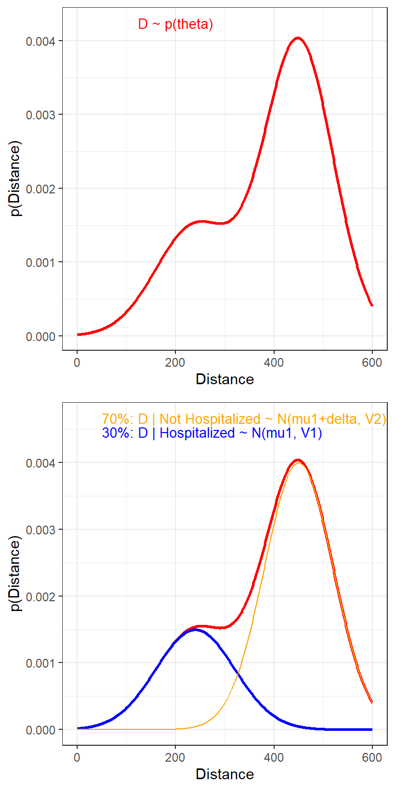
What is the posterior evidence that mean height is greater than 140cm?
hypothesis(fit0, 'Intercept > 140' , alpha = 0.025)
# proportion of posterior samples on the mean (intercept)
# with value > 140, combining 4 chains;
modelposterior2<- posterior_samples(fit0)
sum(modelposterior2[,1]>140)/length(modelposterior2[,1])2. Two-sample
- Simple extension of the one-sample problem
- Observations within the each group have the same mean and variance, yielding the following likelihood \[ Y_{ji} \mid \mu_j, \sigma^2_j \sim N(\mu_j, \sigma^2_j)\]
- Similar candidate prior as in one-sample model
- using normal or student-t dist and observed summary statistics
- within-group variance should be smaller than the variance when we ignore groups
- We can assume equal variance \(\sigma_1^2 = \sigma_2^2\) or allow them to be estimated seperately
- These two approaches are analogous to the equal-variance and unequal-variance t-tests
- In brms, this is easy to specify
Modelling hours of sleep comparing between two drugs
Data which show the effect of two medication (within-patient increase in hours of sleep) on groups consisting of 10 patients each.
Source: Student (1908) The probable error of a mean. (Student 1908)
First examine the summary statistics by group
sleep <- data.frame(extra = c(0.7, -1.6, -0.2, -1.2, -0.1, 3.4, 3.7, 0.8, 0, 2, 1.9, 0.8, 1.1, 0.1, -0.1, 4.4, 5.5, 1.6, 4.6, 3.4),
group = c(1, 1, 1, 1, 1, 1, 1, 1, 1, 1, 2, 2, 2, 2, 2, 2, 2, 2, 2, 2))
sleep %>%
mutate(group = recode_factor(group, '1'="Drug A", '2'="Drug B")) %>%
tbl_summary(
by = group,
statistic = all_continuous() ~ "{mean} ({sd})",
digits = all_continuous() ~ 2) %>%
add_overall()| Characteristic | Overall, N = 201 | Drug A, N = 101 | Drug B, N = 101 |
|---|---|---|---|
| extra | 1.54 (2.02) | 0.75 (1.79) | 2.33 (2.00) |
| 1 Mean (SD) | |||
- Fitting two-sample model in brms using default brms prior
- student_t(3, 1, 2.5) for mean (same for each group)
- student_t(3, 0, 2.5) for sigma (same for each group for unequal variance model)
fit_eq <- brm(data = sleep,
family = gaussian,
extra ~ group, #mean depends on group and one sigma
prior = c(prior(normal(0, 10), class = Intercept),
prior(normal(0,10), class = b),
prior(student_t(3, 0, 2), class = sigma)),
iter = 10000,
warmup = 5000,
chains = 4,
cores = 4, #instructions on MCMC
seed = 123, # random number seed to make results reproducible
silent = 2,
refresh = 0)
prior_summary(fit_eq)
fit_uneq <- brm(data = sleep,
family = gaussian,
bf(extra ~ group, #mean depends on group
sigma ~ group), #sigma differ by group
prior = c(prior(normal(0, 10), class = Intercept), #prior for intercept of the extra ~ group model;
prior(normal(0, 10), class = b), #prior for coefficients of the extra ~ group model;
prior(student_t(3, 0, 2), class = Intercept, dpar = "sigma"), #prior for intercept of the sigma ~ group model;
prior(student_t(3, 0, 2), class = b, dpar = "sigma")), #prior for coefficients of the sigma ~ group model;
iter = 10000,
warmup = 5000,
chains = 4,
cores = 4, #instructions on MCMC
seed = 123, # random number seed to make results reproducible
silent = 2,
refresh = 0)
prior_summary(fit_uneq)
# saveRDS(fit_eq, "data/chap7_twosample_eq")
# saveRDS(fit_uneq, "data/chap7_twosample_uneq")- Summarizing posterior results from equal variance model
## Family: gaussian
## Links: mu = identity; sigma = identity
## Formula: extra ~ group
## Data: sleep (Number of observations: 20)
## Draws: 4 chains, each with iter = 10000; warmup = 5000; thin = 1;
## total post-warmup draws = 20000
##
## Population-Level Effects:
## Estimate Est.Error l-95% CI u-95% CI Rhat Bulk_ESS Tail_ESS
## Intercept 0.73 0.63 -0.55 1.98 1.00 16492 13222
## group2 1.57 0.91 -0.22 3.38 1.00 16232 12475
##
## Family Specific Parameters:
## Estimate Est.Error l-95% CI u-95% CI Rhat Bulk_ESS Tail_ESS
## sigma 2.00 0.35 1.44 2.79 1.00 13907 12976
##
## Draws were sampled using sampling(NUTS). For each parameter, Bulk_ESS
## and Tail_ESS are effective sample size measures, and Rhat is the potential
## scale reduction factor on split chains (at convergence, Rhat = 1).- Question: What is the probability that there is more increase in sleep with drug A? (under equal-variance model)
samples <- posterior_samples(fit_eq)
difference <- samples[,"b_group2"]
#summarize the difference
c(Prob = mean(difference > 0), Mean = mean(difference), lowCrI = quantile(difference, 0.025), highCrI = quantile(difference, 1-0.025))## Prob Mean lowCrI.2.5% highCrI.97.5%
## 0.9591500 1.5713935 -0.2217899 3.3785453#we can also use hypothesis function to evaluate this
hypothesis(fit_eq, "group2 > 0", alpha = 0.025)## Hypothesis Tests for class b:
## Hypothesis Estimate Est.Error CI.Lower CI.Upper Evid.Ratio Post.Prob Star
## 1 (group2) > 0 1.57 0.91 -0.22 3.38 23.48 0.96
## ---
## 'CI': 95%-CI for one-sided and 97.5%-CI for two-sided hypotheses.
## '*': For one-sided hypotheses, the posterior probability exceeds 97.5%;
## for two-sided hypotheses, the value tested against lies outside the 97.5%-CI.
## Posterior probabilities of point hypotheses assume equal prior probabilities.- Summarizing posterior results from unequal variance model and evaluate the same hypothesis
fit_uneq <- readRDS("data/chap7_twosample_uneq")
summary(fit_uneq)## Family: gaussian
## Links: mu = identity; sigma = log
## Formula: extra ~ group
## sigma ~ group
## Data: sleep (Number of observations: 20)
## Draws: 4 chains, each with iter = 10000; warmup = 5000; thin = 1;
## total post-warmup draws = 20000
##
## Population-Level Effects:
## Estimate Est.Error l-95% CI u-95% CI Rhat Bulk_ESS Tail_ESS
## Intercept 0.73 0.63 -0.54 1.97 1.00 15554 10549
## sigma_Intercept 0.63 0.25 0.20 1.17 1.00 15707 11003
## group2 1.57 0.94 -0.27 3.47 1.00 15377 12395
## sigma_group2 0.11 0.35 -0.57 0.80 1.00 14749 11864
##
## Draws were sampled using sampling(NUTS). For each parameter, Bulk_ESS
## and Tail_ESS are effective sample size measures, and Rhat is the potential
## scale reduction factor on split chains (at convergence, Rhat = 1).hypothesis(fit_uneq, "group2 > 0", alpha = 0.025)## Hypothesis Tests for class b:
## Hypothesis Estimate Est.Error CI.Lower CI.Upper Evid.Ratio Post.Prob Star
## 1 (group2) > 0 1.57 0.94 -0.27 3.47 21 0.95
## ---
## 'CI': 95%-CI for one-sided and 97.5%-CI for two-sided hypotheses.
## '*': For one-sided hypotheses, the posterior probability exceeds 97.5%;
## for two-sided hypotheses, the value tested against lies outside the 97.5%-CI.
## Posterior probabilities of point hypotheses assume equal prior probabilities.How to determine equal variance or not?
- Approach 1, visually examine the conditional mean by group.
- Approach 2, comparing models using information criteria (WAIC) or leave-one-out cross validation (LOO) (Vehtari, Gelman, and Gabry 2017)
- Both approaches confirm the equal variance model is the best model!
plot(conditional_effects(fit_uneq), points = TRUE)
waic1 <- waic(fit_eq)
waic2 <- waic(fit_uneq)
compare_ic(waic1, waic2) #equal var best model;## WAIC SE
## fit_eq 85.98 4.25
## fit_uneq 87.57 4.54
## fit_eq - fit_uneq -1.59 0.60loo1 <- loo(fit_eq)
loo2 <- loo(fit_uneq)
loo_compare(loo1, loo2) #equal var best model;## elpd_diff se_diff
## fit_eq 0.0 0.0
## fit_uneq -0.9 0.36.1.2 Linear regression
- The two-sample model is a special case of regression
\[\mu_i = \beta_0 + \beta_1 x_i\]
- Where \(x_i = 0\) for group 1 and \(x_i = 1\) for group 2
- For group 1, \(\mu_i = \beta_0\), the intercept
- For group 2, \(\mu_i = \beta_0 + \beta_1\)
- brms takes care of creating dummy variables!
- but be aware of what the reference group is and what the coefficients mean
- levels will be by default in alphabetical order - use the factor() statement to make a variable with the desired order
Try fitting the two-sample sleep data without the intercept
fit_eq2 <- brm(data = sleep,
family = gaussian,
extra ~ -1 + group, #mean depends on group and one sigma
iter = 10000,
warmup = 5000,
chains = 4,
cores = 4, #instructions on MCMC
seed = 123, # random number seed to make results reproducible
silent = 2,
refresh = 0)
summary(fit_eq2)- In general, for a regression model
\[ y_i \mid \mu_i, \sigma^2_i \sim N(\mu_i, \sigma^2_i)\] \[ \mu_i = \beta_0 + \beta_1 x_{i1} + \ldots + \beta_p x_{ip}\] - where the \(x_{ij}\) can be continuous variables or “dummy” variables - the usual assumption on the variance is \(\sigma_i^2 = \sigma^2\) for all subjects (Homoscedasticity - equal variance assumption) - We can seen that is technically easier to relax this assumption in a Bayesian model! (two-sample unequal variance example)
- Predictions
- We can get the predictions fro the mean value at a given value of the predictors. For example, in simple linear regression model we have
- but recall that both \(\beta_0\) and \(\beta_1\) have posterior distributions
- For each posterior draws of \((\beta_0, \beta_1)^s, s= 1, \ldots, S\), we have a different predicted mean
- The set of values of these predictions across all sampled values give the posterior for the predicted mean
Modelling height - Howell data revisit
- Let’s descriptively examine the height distribution by weight, age, and sex
- We can see that the relationship between age and height is not linear
- we consider the following model
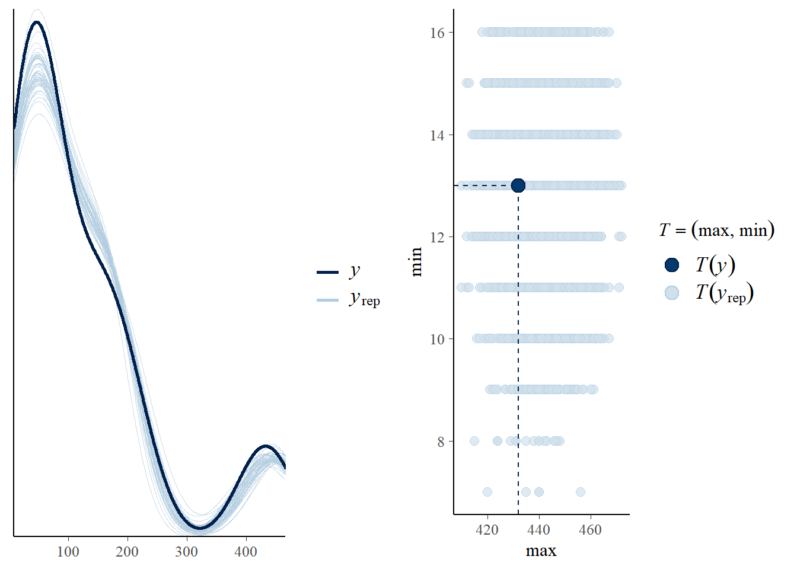
- we consider the following prior distributions (diffuse normal on regression parameter and exponential distribution for \(\sigma\)) \[\beta_0 \sim N(0, 100) \] \[\beta_1 \sim N(0, 10) \] \[\beta_2 \sim N(0, 10) \] \[\beta_3 \sim N(0, 10) \] \[\beta_4 \sim N(0, 10) \] \[ \sigma \sim Gamma(1, 0.01) \]

Figure 6.2: Prior distributions
- we now fit this model in brms
dat <- dat %>%
mutate(male = factor(male, labels = c("female", "male")))
fit1 <- brm(data = dat,
family = gaussian,
height ~ weight + age + I(age^2) + male,
prior = c(prior(normal(0, 100), class = Intercept),
# set for all "b" coefficients
prior(normal(0, 10), class = b),
prior(gamma(1, 0.01), class = sigma)),
iter = 20000,
warmup = 18000,
chains = 4,
cores = 4, #instructions on MCMC
seed = 123, # random number seed to make results reproducible
silent = 2,
refresh = 0)
# saveRDS(fit1, "data/chap7_reg_example")- Summarizing posterior results
## Family: gaussian
## Links: mu = identity; sigma = identity
## Formula: height ~ weight + age + I(age^2) + male
## Data: dat (Number of observations: 544)
## Draws: 4 chains, each with iter = 20000; warmup = 18000; thin = 1;
## total post-warmup draws = 8000
##
## Population-Level Effects:
## Estimate Est.Error l-95% CI u-95% CI Rhat Bulk_ESS Tail_ESS
## Intercept 75.53 1.01 73.52 77.50 1.00 8716 6882
## weight 1.26 0.06 1.15 1.37 1.00 3406 4486
## age 1.06 0.11 0.84 1.29 1.00 3169 4137
## IageE2 -0.01 0.00 -0.01 -0.01 1.00 3297 4224
## malemale 1.86 0.80 0.33 3.41 1.00 5375 4740
##
## Family Specific Parameters:
## Estimate Est.Error l-95% CI u-95% CI Rhat Bulk_ESS Tail_ESS
## sigma 8.70 0.27 8.20 9.23 1.00 6501 5373
##
## Draws were sampled using sampling(NUTS). For each parameter, Bulk_ESS
## and Tail_ESS are effective sample size measures, and Rhat is the potential
## scale reduction factor on split chains (at convergence, Rhat = 1).- Using the posterior mean, we have the following regression line
\[\hat{height}_i = 75.53 + 1.26 \ weight_i + 1.06 \ age_i -0.01 \ age_i^2 + 1.86 \ \text{I(sex=male)}\]
Comparing between male and female of the same weight and age, the expected difference on height is estimated at 1.86cm with 95% CI[0.33, 3.41].
What is the posterior evidence that there’s a positive association between height and sex?
hypothesis(fit1, 'malemale > 0' , alpha = 0.025)## Hypothesis Tests for class b:
## Hypothesis Estimate Est.Error CI.Lower CI.Upper Evid.Ratio Post.Prob Star
## 1 (malemale) > 0 1.86 0.8 0.33 3.41 99 0.99 *
## ---
## 'CI': 95%-CI for one-sided and 97.5%-CI for two-sided hypotheses.
## '*': For one-sided hypotheses, the posterior probability exceeds 97.5%;
## for two-sided hypotheses, the value tested against lies outside the 97.5%-CI.
## Posterior probabilities of point hypotheses assume equal prior probabilities.- we can visualize conditional effect of each continuous covariates on the response variable
- one might consider fitting \(weight^2\)!
plot(conditional_effects(fit1, "weight"),points = TRUE, point_args = list(size = 0.5))
plot(conditional_effects(fit1, "age"),points = TRUE, point_args = list(size = 0.5))
plot(conditional_effects(fit1, "male"))
- Coefficient of determination \(R^2\) is the proportion of the variation in the dependent variable that is predictable from the independent variable(s).
- The estimated \(R^2\) is about 0.9. Really good! About 90% of the variance on height is explained by our model.
bayes_R2(fit1)## Estimate Est.Error Q2.5 Q97.5
## R2 0.9010756 0.002608764 0.8953755 0.9055377- predictive intervals
- predicting height for a female, 33 years of age and weighting 60kg
ind_predic <- posterior_predict(fit1, newdata = data.frame(weight = 60, age = 33, male = "female"))
# mean of the predicted heights
mean(ind_predic)## [1] 174.2372# Construct a 95% posterior credible interval
posterior_interval(ind_predic, prob = 0.95)## 2.5% 97.5%
## [1,] 157.7736 190.5966# Posterior predictive probability of height > 164
sum(ind_predic>164)/length(ind_predic)## [1] 0.8791256.1.3 Model diagnostics
- Geweke index and R-hat (Geweke et al. 1991) to check for MCMC convergence
modelposterior<- as_draws_matrix(fit1)
geweke.diag(modelposterior)##
## Fraction in 1st window = 0.1
## Fraction in 2nd window = 0.5
##
## b_Intercept b_weight b_age b_IageE2 b_malemale sigma
## 1.10099 -0.36665 0.04242 -0.04991 -0.05772 -0.37171
## lp__
## 1.16552- Posterior predictive graphic check for model fit
- A “good” Bayesian model produces posterior predicted sets of response values with features similar to the original data.
- It appears our model can be improved! One suggestion is to fit a non-linear term for weight variable.
- sometime, people also consider data transformation, e.g., log(height)
- we can also try using student-t distribution not normal distribution to fit the mean!
- the observed min and max height is not covered in our posterior predictive samples…
pp_check(fit1, ndraws = 50)
pp_check(fit1, type = "stat_2d", stat = c("max", "min"))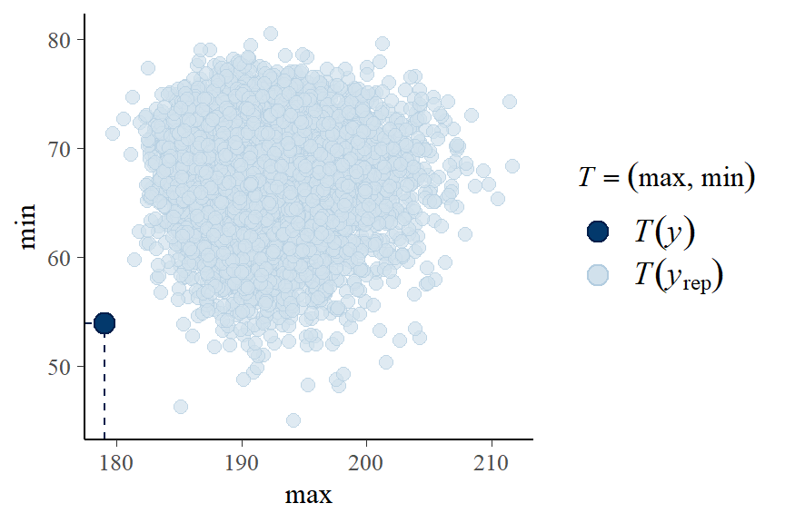
- Residual plot by continuous variables - checking for linearity assumption
res_df <- fit1$data %>%
mutate(predict_y = predict(fit1)[ , "Estimate"],
std_resid = residuals(fit1, type = "pearson")[ , "Estimate"])
ggplot(res_df,
aes(predict_y, std_resid)) +
labs(y="Standardized residuals") +
geom_point(size = 0.8) + stat_smooth(se = FALSE) + theme_bw()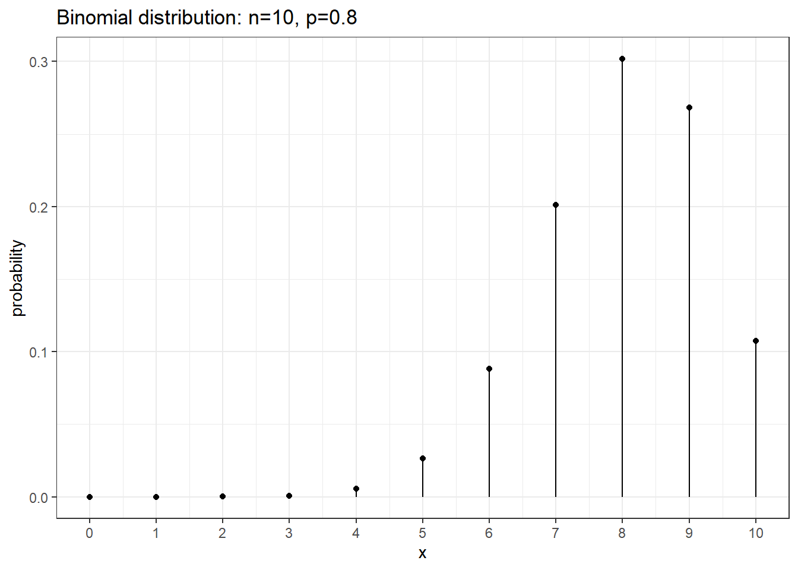
- multicollinearity
- If some coefficients are particularly strongly correlated, you may need to think about using a stronger prior or combining some predictors.
pairs(fit1, pars = "b",
off_diag_args = # arguments of the scatterplots
list(size = 0.5, # point size
alpha = 0.25)) # transparency
6.1.4 Model comparision
Watanabe-Akaike Information Criteria (WAIC)
- WAIC (Watanabe and Opper 2010) is an alternative approach to DIC in estimating the expected log point-wise predictive density
- The smaller the better!
- WAIC incorporates prior information, and the use of point-wise likelihood makes it more robust when the posterior distributions deviate from normality.
- In general, WAIC is a better estimate of the out-of-sample deviance than AIC and DIC.
- In R under brms package we can use
waic()function to obtain WAIC.
Bayesian Leave-one-out cross-validation
The idea of cross-validation is to split the sample so that it imitates the scenario of estimating the parameters in part of the data and predicting the remaining part.
- data that are used for estimation is called the training set, and data that are used for prediction is called the validation set.
Leave-one-out information criteria (LOO-IC) based on posterior predictive distribution
- means that one uses \(n-1\) observations as the training set and 1 observation as the validation sample, repeat the process \(n\) times so that each time a different observation is being predicted
LOO-IC requires fitting the model \(n\) times, it is generally very computational intensive
WAIC can be treated as a fast approximation of LOO-IC, although LOO-IC is more robust and will be a better estimate of out-of-sample deviance
In R under brms package we can use
loo()function to obtain LOO-IC.
Comparing model with \(weight^2\)
- fitting the new model on height, adjusting for age, sex, weight, \(age^2\) and \(weight^2\)
- comparing this model to the regression model adjusted for age, \(age^2\), sex, and weight using WAIC and LOO.
fit2 <- brm(data = dat,
family = gaussian,
height ~ weight + I(weight^2) + age + I(age^2) + male,
prior = c(prior(normal(0, 100), class = Intercept),
prior(normal(0, 10), class = b),
prior(gamma(1, 0.01), class = sigma)),
iter = 20000,
warmup = 18000,
chains = 4,
cores = 4, #instructions on MCMC
seed = 123, # random number seed to make results reproducible
silent = 2,
refresh = 0)
saveRDS(fit2, "data/chp7_height2")
waic1 <- waic(fit1)
waic2 <- waic(fit2)
compare_ic(waic1, waic2)
loo1 <- loo(fit1)
loo2 <- loo(fit2)
loo_compare(loo1, loo2)fit2<-readRDS("data/chp7_height2")
pp_check(fit2, ndraws = 50)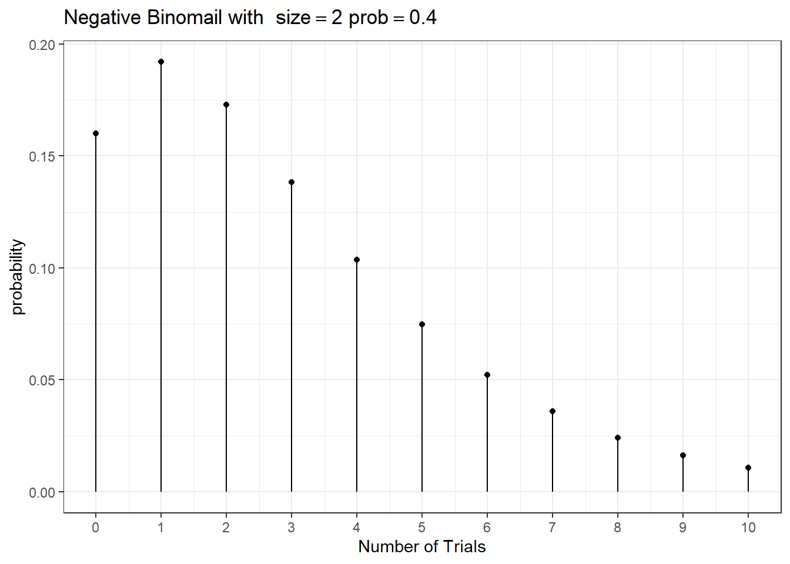
6.2 Hierarchical models
Often models have more complex structures than the ones described by likelihood and priors and simple relationships between data and parameters
In these models data and parameters participate in relationships of hierarchical fashion
- e.g., Correlated and clustering data structures, such as measures within patients, patients within clinics etc.
Bayesian models deal with hierarchical models in a natural and intuitive way (Bürkner 2017)
Source of correlation in clustered (or longitudinal) data
- between-individual heterogeneity on i) mean and ii) velocity (rate of change; slop)
- Within-individual/cluster homogeneity
Bayesian Hierarchical Models
- Often Bayesian models can we written in the following layers of
the hierarchy
- Data Layer \(Y \mid \theta\), the likelihood for the observed data \(Y\) given model parameters \(\theta\).
- Adaptive/Structural Priors \(\theta \mid \alpha, \beta\), the model for parameter \(\theta\) that defined by the latent data generating process governed by the hyperparameters \(\alpha\) and \(\beta\)
- Hyper Priors \(\alpha\) and \(\beta\) as hyper parameters.
Let’s look at a hospital mortality study as an example. This data capture hospital mortality for a specific condition at 20 different hospitals. There is also a variable that describes the average severity of patients at each hospital.
- First let’s examine the data
dat <- read.table("data/HospitalMortality.csv",sep=",", header=T)
dat <- dat %>%
mutate(Hospital = factor(Hospital),
Prop.Dead = round(Deaths/N,3))
dat %>% datatable(
rownames = FALSE,
options = list(
columnDefs = list(list(className = 'dt-center',
targets = 0:4))))dat %>% select(Severity, Prop.Dead) %>% tbl_summary()| Characteristic | N = 251 |
|---|---|
| Severity | 4.10 (3.60, 4.60) |
| Prop.Dead | 0.05 (0.04, 0.08) |
| 1 Median (IQR) | |
1. First model - considering independent between hospital mortality
- We are modelling \[Deaths_i \sim Bin(p_i, n_i)\], where \(i = 1, \ldots, 25\) and \(p_i\) represent the risk of death for the \(i\) hospital with a beta(1,1) prior on all \(p_i\)s
- This model is saying that there is nothing to link mortality in hospital 1 to mortality in any other hospital
- We are essentially estimating the risk of mortality for each hospital
fit1 <- brm(data = dat,
family= binomial,
Deaths | trials(N) ~ 0 + Hospital,
iter = 10000,
warmup = 8000,
chains = 4,
cores = 4,
seed = 123,
silent = 2,
refresh = 0)
# saveRDS(fit1, "data/chap7_h_example1")- Summarizing posterior results
fit1 <- readRDS("data/chap7_h_example1")
#posterior summary of risk (table);
round(exp(fixef(fit1)),3)## Estimate Est.Error Q2.5 Q97.5
## Hospital1 0.022 1.609 0.008 0.051
## Hospital2 0.071 2.257 0.012 0.283
## Hospital3 0.041 1.337 0.022 0.070
## Hospital4 0.024 1.881 0.006 0.066
## Hospital5 0.010 3.566 0.000 0.064
## Hospital6 0.042 1.494 0.018 0.086
## Hospital7 0.018 3.728 0.001 0.124
## Hospital8 0.047 1.913 0.011 0.143
## Hospital9 0.041 1.728 0.012 0.105
## Hospital10 0.035 1.350 0.019 0.061
## Hospital11 0.051 1.389 0.026 0.093
## Hospital12 0.133 1.472 0.058 0.270
## Hospital13 0.109 1.238 0.071 0.164
## Hospital14 0.081 1.249 0.051 0.122
## Hospital15 0.045 1.500 0.019 0.093
## Hospital16 0.329 1.279 0.200 0.527
## Hospital17 0.301 1.159 0.224 0.398
## Hospital18 0.034 1.629 0.012 0.079
## Hospital19 0.066 1.430 0.031 0.125
## Hospital20 0.082 1.317 0.046 0.136
## Hospital21 0.064 1.415 0.031 0.122
## Hospital22 0.085 1.289 0.050 0.137
## Hospital23 0.035 1.493 0.015 0.070
## Hospital24 0.017 1.920 0.004 0.051
## Hospital25 0.044 1.420 0.021 0.083#posterior summary of risk (visual);
mcmc_intervals(fit1, transformations = "plogis")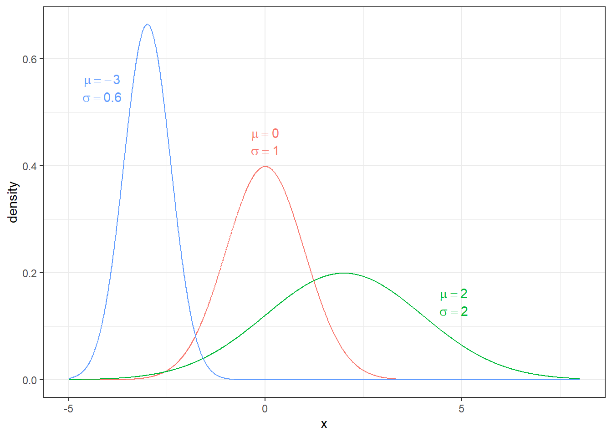
2. Second model - shared parameters on hospital mortality (complete pooling)
Suppose that these were 25 hospitals in the same city
- Similar practices, populations, shared staff in some cases
How can we treat them as one big hospital with exactly the same mortality?
- Easy - specify in the model that they share the same probability \(p\)
Parameterizing using odds
- Odds are the basis for logistic regression, where we model log(odds)
- \(0 \leq p \leq 1 \Rightarrow - \infty \leq \log(Odds) \leq \infty\)
- Suggests an normal uninformative prior on log odds with a sufficient variance (ie sd = 10)
\[ \log(Odds) \sim N(0,\sigma^2)\]
Assume a common odds between all 25 hospitals, we run a pooled model such that \[Deaths_i \sim Bin(p, n_i)\]. This is a complete pooling model.
We are essentially modelling the average population risk of mortality pooling information from all 25 hospitals.
fit1.p <- brm(data = dat,
family= binomial,
Deaths | trials(N) ~ 1,
iter = 10000,
warmup = 8000,
chains = 4,
cores = 4,
seed = 123,
silent = 2,
refresh = 0)
# saveRDS(fit1.p, "data/chap7_h_example1p")- Summarizing posterior results
## Estimate Est.Error Q2.5 Q97.5
## Intercept 0.074 1.063 0.066 0.083- Drawbacks of a complete pooling approach
There are two main drawbacks to taking a complete pooling approach to analyze group structured data:
- in case of clustered and correlated data, we violate the assumption of independence
- misleading conclusions about the relationship between and across subjects
3. third model - shared parameters on hospital mortality (partial pooling)
Suppose that these were 25 hospitals in the same city
- Similar (but not same) practices and patient populations; partly shared staff
How can we treat them as similar
- with a common underlying true mortality
- with random variation from hospital to hospital in the true mortality!
Need to introduce two parameters representing
- Common mortality (mean log odds)
- Hospital-to-hospital variation (sd of log odds)
This introduces an hierarchical structure in the model!
Specifically, we have
- Data Layer \(y_i \mid p_i \sim P(y_i \mid p_i)\)
- Adaptive/Structural Priors \(logit(p_i) \mid \theta, \sigma^2 \sim P(logit(p_i) \mid \theta, \sigma^2)\)
- Hyper Priors \(\theta \sim P(\theta)\) and \(\sigma^2 ~ P(\sigma^2)\) as hyper parameters.
A Bayesian random intercept model!
fit1.ri <- brm(data = dat,
family= binomial,
Deaths | trials(N) ~ 1 + (1|Hospital),
iter = 10000,
warmup = 8000,
chains = 4,
cores = 4,
seed = 123,
silent = 2,
refresh = 0)
# saveRDS(fit1.ri, "data/chap7_h_example1ri")- Summarizing posterior results on risk and between-hospital standard deviation of the intercept
fit1.ri <- readRDS("data/chap7_h_example1ri")
summary(fit1.ri)## Family: binomial
## Links: mu = logit
## Formula: Deaths | trials(N) ~ 1 + (1 | Hospital)
## Data: dat (Number of observations: 25)
## Draws: 4 chains, each with iter = 10000; warmup = 8000; thin = 1;
## total post-warmup draws = 8000
##
## Group-Level Effects:
## ~Hospital (Number of levels: 25)
## Estimate Est.Error l-95% CI u-95% CI Rhat Bulk_ESS Tail_ESS
## sd(Intercept) 0.71 0.13 0.49 1.01 1.00 3005 4847
##
## Population-Level Effects:
## Estimate Est.Error l-95% CI u-95% CI Rhat Bulk_ESS Tail_ESS
## Intercept -2.82 0.17 -3.15 -2.50 1.00 2301 3937
##
## Draws were sampled using sampling(NUTS). For each parameter, Bulk_ESS
## and Tail_ESS are effective sample size measures, and Rhat is the potential
## scale reduction factor on split chains (at convergence, Rhat = 1).#posterior summary of risk overall (table);
round(exp(fixef(fit1.ri)),3)## Estimate Est.Error Q2.5 Q97.5
## Intercept 0.06 1.18 0.043 0.082s1 <- posterior_samples(fit1.ri)
sigma <- s1[,"sd_Hospital__Intercept"]
qs <- quantile(sigma,c(0.025, 0.975))
temp <- density(sigma,n = 1024)
dp1 <- data.frame(sigma=temp$x, density=temp$y, area=cut(temp$x, c(0,qs,10), include.lowest = T))
ggplot(dp1, aes(x=sigma, y=density))+geom_area(aes(fill=area), show.legend=FALSE)+
theme_bw()+
geom_line(color="orange")+
ggtitle(paste0("Mean sigma= ", round(mean(sigma),2),"; 95% CrI: ", round(qs[1],1),
" to ",round(qs[2],2)))+
scale_fill_manual(values=c("orange","white","orange"))
- Hospitals, ranked best to worst by posterior odds of mortality (median ranking on mortality, along with a 95% CrI)
h <- s1[,grep(",Intercept",names(s1))]
r <- apply(h,1,rank)
rankings <- t(apply(r,1,quantile, c(0.5, c(0.025, 0.975))))
row.names(rankings) <- paste("Hospital",1:25)
colnames(rankings)[1] <- "Median"
rankings <- data.frame(rankings, ObservedProportion=round(dat$Deaths/dat$N,3), n=dat$N)
rankings <- rankings[order(rankings[,1]),]
knitr::kable(rankings, caption="Hospitals, ranked best to worst by posterior odds of mortality")| Median | X2.5. | X97.5. | ObservedProportion | n | |
|---|---|---|---|---|---|
| Hospital 1 | 4 | 1 | 14 | 0.024 | 209 |
| Hospital 24 | 4 | 1 | 15 | 0.020 | 149 |
| Hospital 5 | 5 | 1 | 20 | 0.017 | 60 |
| Hospital 4 | 6 | 1 | 18 | 0.028 | 109 |
| Hospital 10 | 7 | 1 | 15 | 0.035 | 340 |
| Hospital 23 | 7 | 1 | 18 | 0.036 | 196 |
| Hospital 18 | 8 | 1 | 19 | 0.036 | 140 |
| Hospital 3 | 9 | 2 | 17 | 0.041 | 319 |
| Hospital 6 | 10 | 2 | 20 | 0.043 | 164 |
| Hospital 7 | 10 | 1 | 22 | 0.031 | 32 |
| Hospital 9 | 11 | 1 | 21 | 0.045 | 89 |
| Hospital 15 | 11 | 2 | 20 | 0.046 | 153 |
| Hospital 25 | 11 | 2 | 19 | 0.044 | 203 |
| Hospital 8 | 13 | 2 | 23 | 0.053 | 57 |
| Hospital 11 | 13 | 3 | 21 | 0.051 | 196 |
| Hospital 19 | 16 | 5 | 22 | 0.065 | 138 |
| Hospital 21 | 16 | 5 | 22 | 0.063 | 142 |
| Hospital 2 | 17 | 2 | 23 | 0.083 | 24 |
| Hospital 14 | 18 | 11 | 23 | 0.076 | 290 |
| Hospital 20 | 19 | 10 | 23 | 0.078 | 192 |
| Hospital 22 | 19 | 11 | 23 | 0.081 | 211 |
| Hospital 12 | 22 | 12 | 23 | 0.123 | 65 |
| Hospital 13 | 22 | 16 | 23 | 0.100 | 250 |
| Hospital 16 | 24 | 24 | 25 | 0.250 | 92 |
| Hospital 17 | 25 | 24 | 25 | 0.232 | 267 |
6.2.1 Clustered data (Multi-level)
Example: Developmental toxicity study of ethylene glycol (EG) (Price et al. 1985)
The data are from a development toxicity study of ethylene glycol (EG).
Ethylene glycol is a high-volume industrial chemical used in many applications.
In a study of laboratory mice conducted through the National Toxicology Program (NTP), EG was administered at doses of 0, 750, 1500, or 3000 mg/kg/day to 94 pregnant mice (dams) over the period of major organogenesis, beginning just after implantation.
Following sacrifice, fetal weight and evidence of malformations were recorded
Let’s first read in the data
- This data set is in a long format
- we can see each row represents a mouse.
- Mice are nested within the litter. We have a two-level data!
ntp <- read.table("data/ntp-data.txt", header = TRUE)
colnames(ntp) <- c("Litter", "Dose", "Weight", "Malformation")
ntp <- ntp %>%
group_by(Litter) %>%
mutate(Litid = row_number()) %>% # seq id for each litter
mutate(FetalID = paste0(Litter, ".", Litid)) %>% # FetalID = LitID.tempid
select(-Litid) # remove tempid from toxic2
knitr::kable(head(ntp), row.names = F)| Litter | Dose | Weight | Malformation | FetalID |
|---|---|---|---|---|
| 60 | 0 | 0.828 | 0 | 60.1 |
| 60 | 0 | 0.953 | 0 | 60.2 |
| 60 | 0 | 0.954 | 0 | 60.3 |
| 60 | 0 | 1.070 | 0 | 60.4 |
| 60 | 0 | 1.065 | 0 | 60.5 |
| 60 | 0 | 0.959 | 0 | 60.6 |
- Number of doses in each group and number of fetuses in each litter
cluster <- ntp %>% group_by(Dose) %>%
summarize(nlitter = n_distinct(Litter), nfetal = n_distinct(FetalID))
cluster %>% datatable(
rownames = FALSE,
options = list(
columnDefs = list(list(className = 'dt-center',
targets = 0:2))))clustersize <- ntp %>% group_by(Litter) %>% summarise(csize = n_distinct(FetalID))
# clustersize %>% datatable(
# rownames = FALSE,
# options = list(
# columnDefs = list(list(className = 'dt-center',
# targets = 0:1))))
clustersize %>%
ggplot(aes(x = Litter, y = csize)) +
geom_bar(stat = "identity", fill = "black", color = "snow1")+
theme_bw()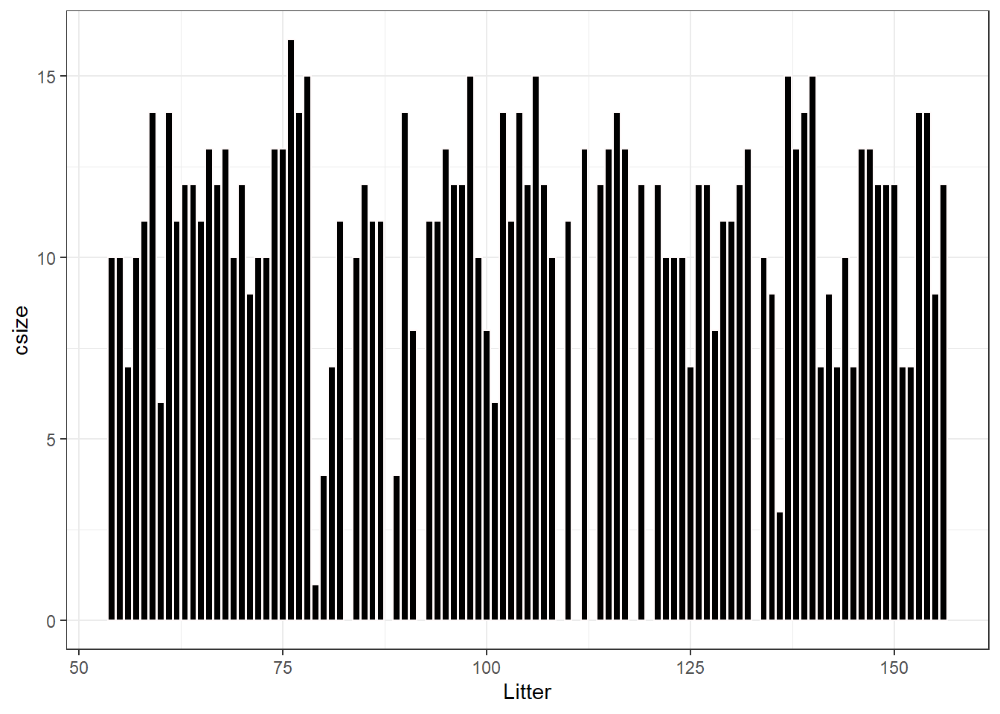
- Visualize relationship between fetal malformation and dose
ntp %>%
group_by(Dose, Litter) %>%
summarise(fmalprop = mean(Malformation)) %>%
ggplot(aes(x = Litter, y = fmalprop)) +
geom_bar(stat = "identity", fill = "steelblue") +
ylab("Proportion of Malformation")+
facet_wrap(~Dose)+
theme_bw()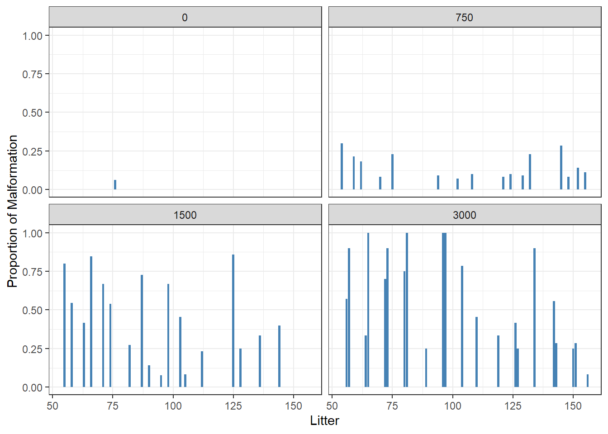
- Visualize relationship between fetal weight and dose
ntp %>%
ggplot(aes(x = Litter, y = Weight)) +
geom_boxplot(aes(group = Litter), color = "steelblue") +
facet_wrap(~Dose)+
theme_bw()
ntp <- ntp %>%
mutate(Dose = factor(Dose, levels = c("0","750","1500","3000")))Suppose we are interested to assess the effect of dose on fetal weight.
The data on fetal weight from this experiment are clustered, with observations on the fetuses nested within litters.
First model - Normal hierarchical model with random intercept
data structure: model of fetal weight within each litter (index by j) \[ Y_{ij} \mid \mu_j, \sigma_y \sim N(\mu_j, \sigma_y^2)\]
adaptive priors on litter-level mean
\[\mu_j \mid \mu, \sigma_\mu \sim N(\mu, \sigma_u^2)\]
hyperparameter priors on \(\mu\), \(\sigma_u\) as well as global prior for \(\sigma_y\)
Variability within litter by dose
- in this model, only \(\beta_{0j}\) depends on litter
- \(\beta_{1}\) is shared across all litter \(j\), the expected change in fetal weight comparing between various dosage to reference level (dose = 0)
- \(\sigma_y\) measures Within-group variability around the mean regression model \(\beta_{0j} + \beta_{1} \ dose_{ij}\)
\[\mu_{ij} = \beta_{0j} + \beta_{1} \ dose_{ij}\]
- specifying our hierarchical random intercepts model (update with \(\beta\)):
\[ Y_{ij} \mid \beta_{0j}, \beta_{1}, \sigma_y \sim N(\beta_{0j} + \beta_{1} \ dose_{ij}, \sigma_y^2) \]
\[\beta_{0j} \mid \beta_{0}, \sigma_0^2\]
\[\beta_{0} \sim N(0,10)\] \[\beta_{1} \sim N(0,10)\] \[\sigma_y \sim HalfCauchy(10)\] \[\sigma_0 \sim HalfCauchy(10)\]
fit2 <- brm(data = ntp,
family= gaussian(),
Weight ~ Dose + (1|Litter),
prior = c(prior(normal(0, 10), class = Intercept),
prior(normal(0, 10), class = b),
prior(cauchy(0, 10), class = sd),
prior(cauchy(0, 10), class = sigma)),
iter = 10000,
warmup = 8000,
chains = 4,
cores = 4,
seed = 123,
silent = 2,
refresh = 0)
# saveRDS(fit2, "data/chap7_h_example2")fit2 <- readRDS("data/chap7_h_example2")
summary(fit2)## Family: gaussian
## Links: mu = identity; sigma = identity
## Formula: Weight ~ Dose + (1 | Litter)
## Data: ntp (Number of observations: 1027)
## Draws: 4 chains, each with iter = 10000; warmup = 8000; thin = 1;
## total post-warmup draws = 8000
##
## Group-Level Effects:
## ~Litter (Number of levels: 94)
## Estimate Est.Error l-95% CI u-95% CI Rhat Bulk_ESS Tail_ESS
## sd(Intercept) 0.09 0.01 0.07 0.10 1.00 991 1619
##
## Population-Level Effects:
## Estimate Est.Error l-95% CI u-95% CI Rhat Bulk_ESS Tail_ESS
## Intercept 0.97 0.02 0.94 1.01 1.01 692 1418
## Dose750 -0.09 0.03 -0.14 -0.04 1.00 808 1647
## Dose1500 -0.19 0.03 -0.24 -0.14 1.00 974 2217
## Dose3000 -0.26 0.03 -0.31 -0.21 1.00 794 1737
##
## Family Specific Parameters:
## Estimate Est.Error l-95% CI u-95% CI Rhat Bulk_ESS Tail_ESS
## sigma 0.07 0.00 0.07 0.08 1.00 6968 5538
##
## Draws were sampled using sampling(NUTS). For each parameter, Bulk_ESS
## and Tail_ESS are effective sample size measures, and Rhat is the potential
## scale reduction factor on split chains (at convergence, Rhat = 1).# checking traceplot
# fit2 %>% plot( combo = c("hist", "trace"), widths = c(1, 1.5),
# theme = theme_bw(base_size = 10))
conditional_effects(fit2)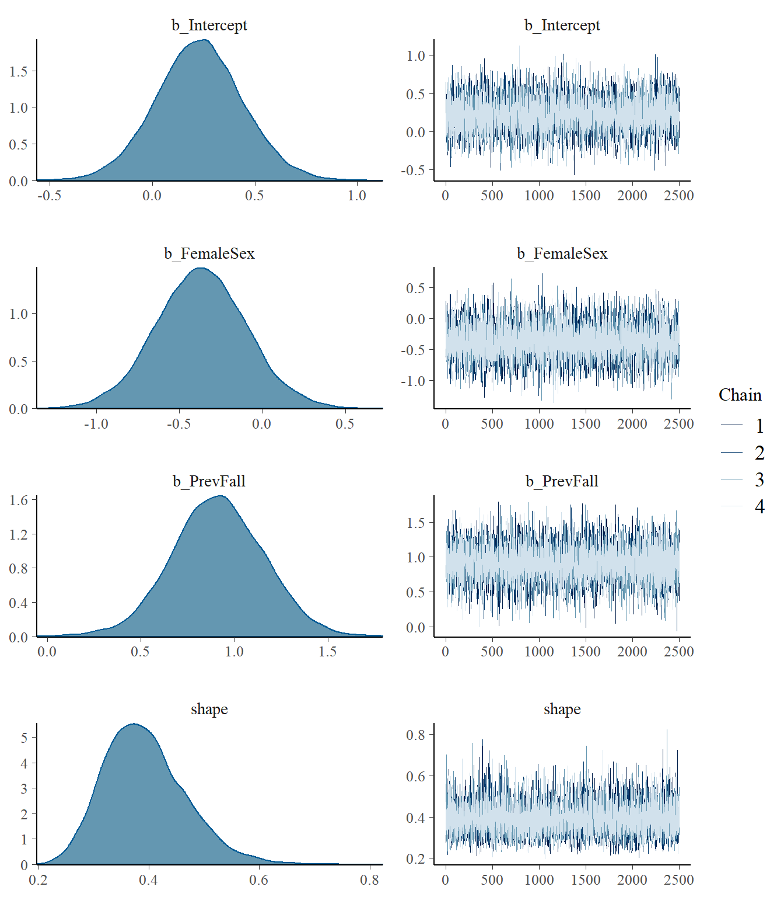
- The adjusted ICC represents the proportion of variance of the outcome that are due to between-level (e.g., between-group, between-person) differences
- Does not consider fixed effect! In this case, adjusted ICC does not feature variation caused by dose.
\[\rho_{adj} = \frac{\sigma_0^2}{\sigma_0^2 + \sigma^2}\]
where \(\sigma_0^2\) is the between-level SD, which is the SD of cluster means (i.e., variability between litters) and \(\sigma\) is the observation-specific SD (i.e., variability within a litter)
The conditional ICC considers variation with fixed effect, in this case dose.
\[\rho_{c} = \frac{\sigma_0^2}{\sigma_0^2 + \sigma^2 + \sigma_f^2}\]
\[\sigma_f^2 = var(\sum_{m=1}^p \beta_m x_{mij}), p \text{ # of coefficients exclude } \beta_0\]
reference: (Nakagawa, Johnson, and Schielzeth 2017) doi: 10.1098/rsif.2017.0213
We can use the posterior draws of the two SD to compute the posterior for the adjusted ICC:
# Computing ICC
# 1. Obtain posterior draws of tau and sigma
sd_m2 <- VarCorr(fit2, summary = FALSE)
draws_tau <- sd_m2$Litter$sd[ , "Intercept"] # tau
draws_sigma <- sd_m2$residual__$sd[ , 1] #sigma
# 2. Compute draws for adjusted ICC
draws_icc <- draws_tau^2 / (draws_tau^2 + draws_sigma^2)
# quantile of posterior adjusted ICC
quantile(draws_icc, p=c(0.5, 0.025,0.975)) ## 50% 2.5% 97.5%
## 0.5623851 0.4789231 0.6524716# Plot the adjusted ICC
qplot(draws_icc, geom = "density", xlab = "ICC adjust", bw = "SJ")
It was estimated that 56%, 95% CI [48%, 65%] of the variations in fetal weight was attributed to between-litter differences.
We can use the posterior draws of b_Dose750, b_Dose1500, and b_Dose3000 (fix effects) to compute the posterior for the conditional ICC:
# sjstats::icc(fit2) point estimate of adjusted and conditional ICC;
# Intraclass Correlation Coefficient
#
# Adjusted ICC: 0.565
# Conditional ICC: 0.317
# calculating conditional ICC
post_par <- colMeans(posterior_samples(fit2, pars = c("b_Dose750","b_Dose1500","b_Dose3000")))
dummy <- with(ntp, outer(Dose, levels(Dose), `==`)*1)[,-1] #dummy matrix removing dose0 level;
sigma_f2 <- var(dummy%*%post_par)
draws_icc_conditional <- (draws_tau^2) / (draws_tau^2 + sigma_f2+ draws_sigma^2)
# quantile of posterior conditional ICC
quantile(draws_icc_conditional, p=c(0.5, 0.025,0.975)) ## 50% 2.5% 97.5%
## 0.3142783 0.2486054 0.3974582# Plot the adjusted ICC
qplot(draws_icc_conditional, geom = "density", xlab = "ICC conditional", bw = "SJ")
It was estimated that 31%, 95% CI [25%, 40%] of the variations in fetal weight was attributed to between-litter differences given fix effects.
Second model - Normal hierarchical model with varying intercept and slope
Variability in “velocity” between individual, dose the effect of dose on weight also vary by litter?
We want to build a model which recognizes that in the relationship between feta weight and dose,
- where the intercept (i.e., baseline weight)
- and slope (i.e., rate at which weight changes with dose) might vary from mouse to mouse.
A random intercept and slope model!
Variability within litter by dose
- in this model, \(\beta_{0j}\) and \(\beta_{1j}\) depend on litter
specifying our hierarchical random intercept and slope model :
\[ Y_{ij} \mid \beta_{0j}, \beta_{1j}, \sigma_y \sim N(\beta_{0j} + \beta_{1j} \ dose_{ij}, \sigma_y^2) \]
\[\beta_{0j} \mid \beta_{0}, \sigma_0^2\] \[\beta_{1j} \mid \beta_{1}, \sigma_1^2\]
In this model \(\beta_{0j}\) and \(\beta_{1j}\) working together to describe the model for litter \(j\), and thus are correlated!
Let \(\rho \in [-1,1]\) represents the correlation between \(\beta_{0j}\) and \(\beta_{1j}\). We can assign a joint Normal model of \(\beta_{0j}\) and \(\beta_{1j}\) where
\[ \begin{pmatrix} \beta_{0j}\\ \beta_{1j} \end{pmatrix} \mid \beta_{0}, \beta_{1}, \sigma_0, \sigma_1 \sim N(\begin{pmatrix} \beta_{0}\\ \beta_{1} \end{pmatrix}, \begin{pmatrix} \sigma_0^2 & \rho \sigma_0\sigma_1 \\ \rho \sigma_0\sigma_1 & \sigma_1^2 \end{pmatrix}). \]
\[\beta_{0} \sim N(0,10)\] \[\beta_{1} \sim N(0,10)\] \[\sigma_y \sim HalfCauchy(10)\] \[\sigma_0 \sim HalfCauchy(10)\] \[\sigma_1 \sim HalfCauchy(10)\] \[\mathbf{R} \sim LKJcorr(2)\]
where \(\mathbf{R}\) is the correlation matrix \[\begin{pmatrix} 1 & \rho \\ \rho & 1 \end{pmatrix}\]
LKJ-correlation prior (Lewandowski, Kurowicka, and Joe 2009) with one parameter (\(\zeta\)) that controls the strength of the correlation.
dlkjcorr2 <- function(rho, eta = 1, log = FALSE) {
# Function to compute the LKJ density given a correlation
out <- (eta - 1) * log(1 - rho^2) -
1 / 2 * log(pi) - lgamma(eta) + lgamma(eta + 1 / 2)
if (!log) out <- exp(out)
out
}
ggplot(tibble(rho = c(-1, 1)), aes(x = rho)) +
stat_function(fun = dlkjcorr2, args = list(eta = 0.1),
aes(col = "0.1"), n = 501) +
stat_function(fun = dlkjcorr2, args = list(eta = 0.5),
aes(col = "0.5"), n = 501) +
stat_function(fun = dlkjcorr2, args = list(eta = 1),
aes(col = "1"), n = 501) +
stat_function(fun = dlkjcorr2, args = list(eta = 2),
aes(col = "2"), n = 501) +
stat_function(fun = dlkjcorr2, args = list(eta = 10),
aes(col = "10"), n = 501) +
stat_function(fun = dlkjcorr2, args = list(eta = 100),
aes(col = "100"), n = 501) +
labs(col = expression(eta), x = expression(rho), y = "Density")+
theme_bw()Figure 6.3: LKJ prior for different values of the shape paramete
fit3 <- brm(data = ntp,
family= gaussian(),
Weight ~ Dose + (Dose|Litter),
prior = c(prior(normal(0, 10), class = Intercept),
prior(normal(0, 10), class = b),
prior(cauchy(0, 10), class = sd),
prior(cauchy(0, 10), class = sigma),
prior(lkj(2), class = cor)),
iter = 11000,
warmup = 10000,
chains = 3,
cores = 4,
control = list(adapt_delta = .9),
seed = 123,
silent = 2,
refresh = 0)
# saveRDS(fit3, "data/chap7_h_example3")- Posterior summary
fit3 <- readRDS("data/chap7_h_example3")
summary(fit3)## Family: gaussian
## Links: mu = identity; sigma = identity
## Formula: Weight ~ Dose + (Dose | Litter)
## Data: ntp (Number of observations: 1027)
## Draws: 3 chains, each with iter = 11000; warmup = 10000; thin = 1;
## total post-warmup draws = 3000
##
## Group-Level Effects:
## ~Litter (Number of levels: 94)
## Estimate Est.Error l-95% CI u-95% CI Rhat Bulk_ESS
## sd(Intercept) 0.07 0.01 0.05 0.09 1.01 636
## sd(Dose750) 0.05 0.03 0.00 0.12 1.00 231
## sd(Dose1500) 0.07 0.04 0.01 0.15 1.00 404
## sd(Dose3000) 0.08 0.04 0.01 0.15 1.01 412
## cor(Intercept,Dose750) -0.07 0.35 -0.69 0.64 1.00 564
## cor(Intercept,Dose1500) -0.03 0.36 -0.71 0.66 1.00 647
## cor(Dose750,Dose1500) -0.01 0.37 -0.69 0.68 1.01 1110
## cor(Intercept,Dose3000) 0.01 0.36 -0.66 0.68 1.01 560
## cor(Dose750,Dose3000) -0.00 0.37 -0.68 0.70 1.00 1224
## cor(Dose1500,Dose3000) 0.00 0.38 -0.70 0.70 1.00 831
## Tail_ESS
## sd(Intercept) 1333
## sd(Dose750) 708
## sd(Dose1500) 830
## sd(Dose3000) 759
## cor(Intercept,Dose750) 790
## cor(Intercept,Dose1500) 653
## cor(Dose750,Dose1500) 1778
## cor(Intercept,Dose3000) 749
## cor(Dose750,Dose3000) 1876
## cor(Dose1500,Dose3000) 1553
##
## Population-Level Effects:
## Estimate Est.Error l-95% CI u-95% CI Rhat Bulk_ESS Tail_ESS
## Intercept 0.98 0.01 0.95 1.00 1.00 855 1252
## Dose750 -0.09 0.02 -0.14 -0.05 1.00 1280 1737
## Dose1500 -0.20 0.03 -0.25 -0.14 1.00 1536 1698
## Dose3000 -0.26 0.03 -0.32 -0.21 1.00 1581 1979
##
## Family Specific Parameters:
## Estimate Est.Error l-95% CI u-95% CI Rhat Bulk_ESS Tail_ESS
## sigma 0.07 0.00 0.07 0.08 1.00 4723 2301
##
## Draws were sampled using sampling(NUTS). For each parameter, Bulk_ESS
## and Tail_ESS are effective sample size measures, and Rhat is the potential
## scale reduction factor on split chains (at convergence, Rhat = 1).fit3 %>% plot( combo = c("hist", "trace"), widths = c(1, 1.5),
theme = theme_bw(base_size = 10)) 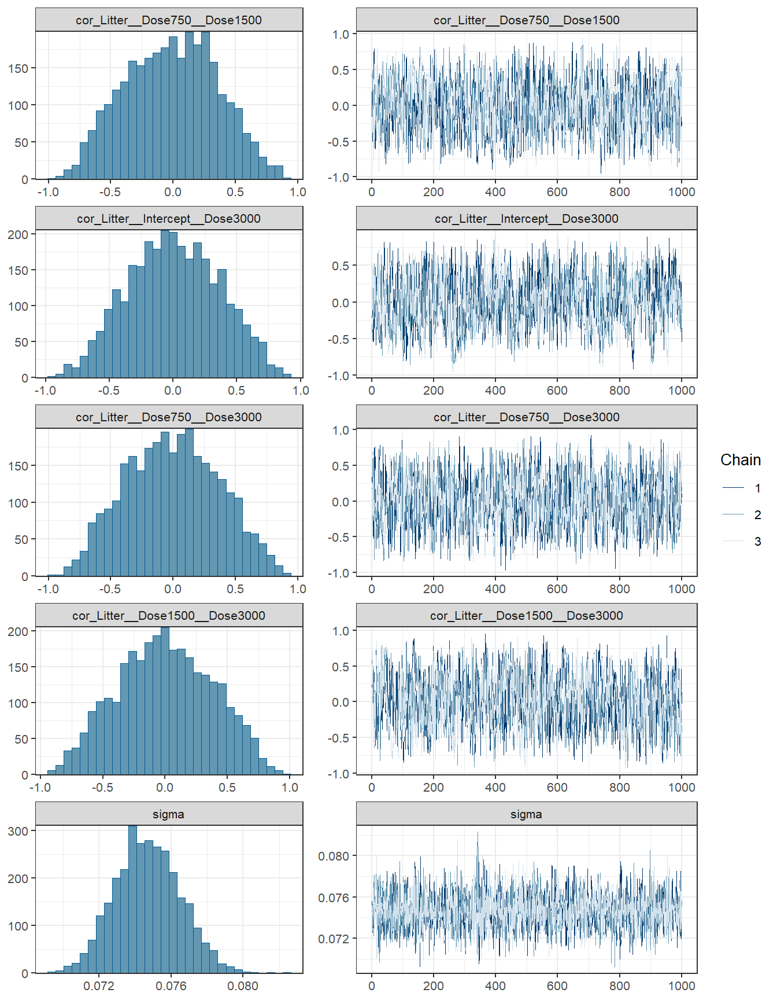
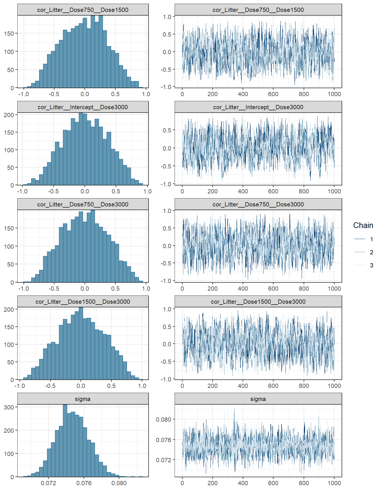
conditional_effects(fit3)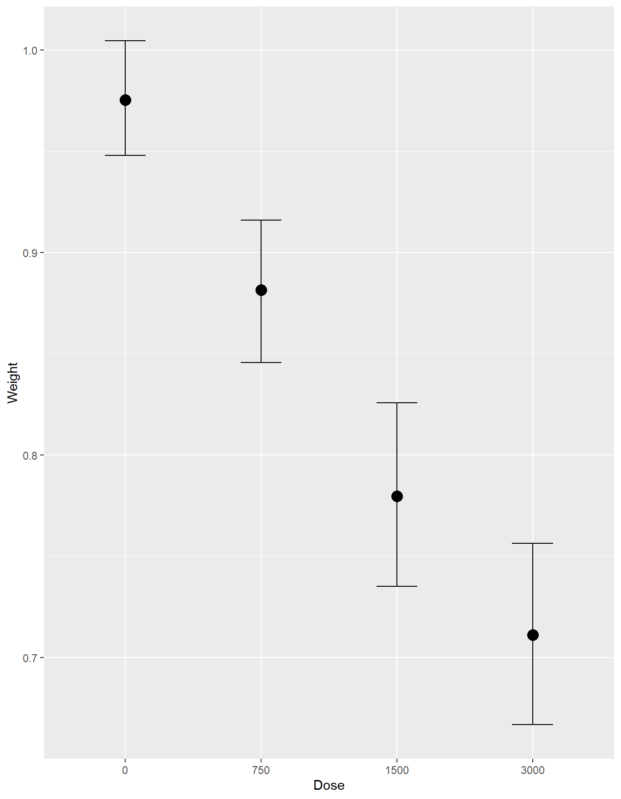
- Interpretations
round(VarCorr(fit3)$Litter$sd, 3)## Estimate Est.Error Q2.5 Q97.5
## Intercept 0.068 0.011 0.050 0.091
## Dose750 0.051 0.032 0.002 0.120
## Dose1500 0.071 0.038 0.006 0.150
## Dose3000 0.080 0.036 0.013 0.155- Comparing between the two models (both models are really similar)
loo(fit2, fit3)## Output of model 'fit2':
##
## Computed from 8000 by 1027 log-likelihood matrix
##
## Estimate SE
## elpd_loo 1153.9 33.6
## p_loo 95.8 8.5
## looic -2307.9 67.2
## ------
## Monte Carlo SE of elpd_loo is NA.
##
## Pareto k diagnostic values:
## Count Pct. Min. n_eff
## (-Inf, 0.5] (good) 1021 99.4% 908
## (0.5, 0.7] (ok) 4 0.4% 183
## (0.7, 1] (bad) 2 0.2% 16
## (1, Inf) (very bad) 0 0.0% <NA>
## See help('pareto-k-diagnostic') for details.
##
## Output of model 'fit3':
##
## Computed from 3000 by 1027 log-likelihood matrix
##
## Estimate SE
## elpd_loo 1154.2 33.7
## p_loo 96.5 9.0
## looic -2308.5 67.5
## ------
## Monte Carlo SE of elpd_loo is NA.
##
## Pareto k diagnostic values:
## Count Pct. Min. n_eff
## (-Inf, 0.5] (good) 1023 99.6% 388
## (0.5, 0.7] (ok) 2 0.2% 69
## (0.7, 1] (bad) 1 0.1% 56
## (1, Inf) (very bad) 1 0.1% 3
## See help('pareto-k-diagnostic') for details.
##
## Model comparisons:
## elpd_diff se_diff
## fit3 0.0 0.0
## fit2 -0.3 1.2waic1 <- waic(fit2)
waic2 <- waic(fit3)
compare_ic(waic1, waic2) ## WAIC SE
## fit2 -2311.00 66.82
## fit3 -2311.51 67.46
## fit2 - fit3 0.52 3.096.3 Regression regularization
6.3.1 Shrinkage Priors in action
When the number of parameters to be estimated is large relative to sample size, estimation using non-informative or weakly informative priors tend to overfit.
One way to avoid overfitting is to perform regularization, that is, to shrink some of the parameters to closer to zero. This makes the model fit less well to the existing data, but will be much more generalizable to an independent data set.
Sparsity-Inducing Priors
The horseshoe prior is a type of hierarchical prior for regression models by introducing a global scale and local scale parameters on the priors for the regression coefficients.
Specifically, with \(p\) predictors
\[Y_i \sim N(\mu_i, \sigma^2)\] \[\mu_i = \beta_0 + \sum_{m=1}^p\beta_m X_m\] \[\beta_0 \sim N(0,10)\] \[\beta_m \sim N(0,\tau\lambda_m)\] \[\lambda_m \sim Cauchy(10)\] \[\tau \sim Cauchy(\tau_0)\]
- local scale \(\lambda_m\) can flexibly shrink the coefficient to close to zero.
dhs <- Vectorize(
function(y, df = 1) {
ff <- function(lam) dnorm(y, 0, sd = lam) * dt(lam, df) * 2
if (y != 0) integrate(ff, lower = 0, upper = Inf)$value
else Inf
}
)
ggplot(data.frame(x = c(-6, 6)), aes(x = x)) +
stat_function(fun = dhs, args = list(df = 1), n = 501,
aes(col = "HS"), linetype = 1) +
stat_function(fun = dnorm, n = 501,
aes(col = "norm"), linetype = 2) +
scale_color_manual("", values = c("steelblue", "black"),
labels = c("horseshoe(1)", "N(0, 1)")) +
xlab("y") + ylab("density") + ylim(0, 0.75)+
theme_bw()
6.3.2 Bayesian logistic regression model (COPE example revisit)
Data come from a cross-sectional study of 1,225 smokers over the age of 40.
Each participant was assessed for chronic obstructive pulmonary disease (COPD), and characteristics of the type of cigarette they most frequently smoke were recorded.
The objective of the study was to identify associations between COPD diagnosis and cigarette characteristics
We will use the following variables from this data set:
NIC: Nicotine content, in mg
TAR: Tar content, in mg
LEN: Length of cigarette, in mm
copd: 1 = COPD diagnosis, 0 = no COPD diagnosis
| NIC | TAR | LEN | copd |
|---|---|---|---|
| 0.2 | 3 | 68 | 0 |
| 0.3 | 5 | 68 | 0 |
| 0.8 | 14 | 83 | 0 |
| 0.9 | 15 | 83 | 0 |
| 0.8 | 11 | 83 | 0 |
| 0.9 | 15 | 84 | 0 |
- We fit a simple logistic regression, predicting the risk of copd by all covariates as well as all interaction effects
fit4.1 <- brm(copd ~ (.)^2,
data = copd,
family = bernoulli(link = "logit"),
prior = c(
prior(normal(0,10), class = "Intercept"),
# Prior guess of 25% of the terms are non-zero
prior(horseshoe(par_ratio = 2 / 8), class = "b")),
iter = 7500,
warmup = 5000,
chains = 4,
cores = 5,
seed = 123,
silent = 2,
refresh = 0)
fit4.2 <- brm(copd ~ (.)^2,
data = copd,
family = bernoulli(link = "logit"),
prior = c(
prior(normal(0,10), class = "Intercept"),
prior(normal(0,10), class = "b")),
iter = 7500,
warmup = 5000,
chains = 4,
cores = 5,
seed = 123,
silent = 2,
refresh = 0)
# saveRDS(fit4.1, file="data/chap7_h_example4.1")
# saveRDS(fit4.2, file="data/chap7_h_example4.2")fit4.1 <- readRDS("data/chap7_h_example4.1")
fit4.2 <- readRDS("data/chap7_h_example4.2")
summary(fit4.2)## Family: bernoulli
## Links: mu = logit
## Formula: copd ~ (NIC + TAR + LEN)^2
## Data: copd (Number of observations: 1225)
## Draws: 4 chains, each with iter = 7500; warmup = 5000; thin = 1;
## total post-warmup draws = 10000
##
## Population-Level Effects:
## Estimate Est.Error l-95% CI u-95% CI Rhat Bulk_ESS Tail_ESS
## Intercept -5.16 3.30 -11.73 1.20 1.00 4766 4352
## NIC 5.63 6.27 -6.59 18.02 1.00 2652 3835
## TAR -0.31 0.46 -1.20 0.58 1.00 2669 4452
## LEN 0.02 0.03 -0.04 0.09 1.00 5107 4676
## NIC:TAR 0.06 0.04 -0.02 0.15 1.00 6022 6298
## NIC:LEN -0.06 0.07 -0.21 0.08 1.00 2631 4007
## TAR:LEN 0.00 0.01 -0.01 0.01 1.00 2644 4475
##
## Draws were sampled using sampling(NUTS). For each parameter, Bulk_ESS
## and Tail_ESS are effective sample size measures, and Rhat is the potential
## scale reduction factor on split chains (at convergence, Rhat = 1).summary(fit4.1)## Family: bernoulli
## Links: mu = logit
## Formula: copd ~ (NIC + TAR + LEN)^2
## Data: copd (Number of observations: 1225)
## Draws: 4 chains, each with iter = 7500; warmup = 5000; thin = 1;
## total post-warmup draws = 10000
##
## Population-Level Effects:
## Estimate Est.Error l-95% CI u-95% CI Rhat Bulk_ESS Tail_ESS
## Intercept -3.25 0.57 -4.36 -2.07 1.00 6318 5700
## NIC 0.01 0.12 -0.04 0.10 1.00 4425 3544
## TAR 0.00 0.02 -0.03 0.05 1.00 4743 4868
## LEN -0.00 0.01 -0.01 0.01 1.00 4978 5215
## NIC:TAR 0.02 0.02 -0.00 0.08 1.00 3152 4269
## NIC:LEN 0.00 0.01 -0.00 0.02 1.00 4716 5852
## TAR:LEN 0.00 0.00 -0.00 0.00 1.00 5359 7601
##
## Draws were sampled using sampling(NUTS). For each parameter, Bulk_ESS
## and Tail_ESS are effective sample size measures, and Rhat is the potential
## scale reduction factor on split chains (at convergence, Rhat = 1).- An arbitrary cutoff is to select only coefficients with posterior means larger than .02, in which case only NIC and TAR and their interaction were supported by the data.
R Session information
## R version 4.0.5 (2021-03-31)
## Platform: x86_64-w64-mingw32/x64 (64-bit)
## Running under: Windows 10 x64 (build 19044)
##
## Matrix products:
##
## locale:
## [1] LC_COLLATE=English_Canada.1252 LC_CTYPE=English_Canada.1252
## [3] LC_MONETARY=English_Canada.1252 LC_NUMERIC=C
## [5] LC_TIME=English_Canada.1252
##
## attached base packages:
## [1] stats graphics grDevices utils datasets methods base
##
## other attached packages:
## [1] DT_0.21 extraDistr_1.9.1 gtsummary_1.5.2 bayesplot_1.8.1
## [5] MCMCpack_1.6-0 MASS_7.3-53.1 coda_0.19-4 ggmcmc_1.5.1.1
## [9] brms_2.16.3 Rcpp_1.0.7 ggpubr_0.4.0 forcats_0.5.1
## [13] stringr_1.4.0 dplyr_1.0.8 purrr_0.3.4 readr_2.1.2
## [17] tidyr_1.2.0 tibble_3.1.6 ggplot2_3.3.5 tidyverse_1.3.1